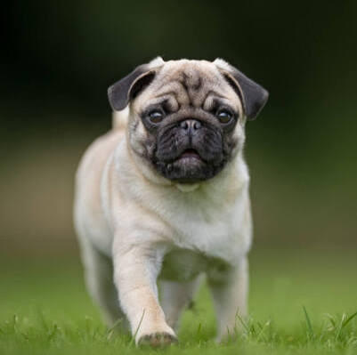
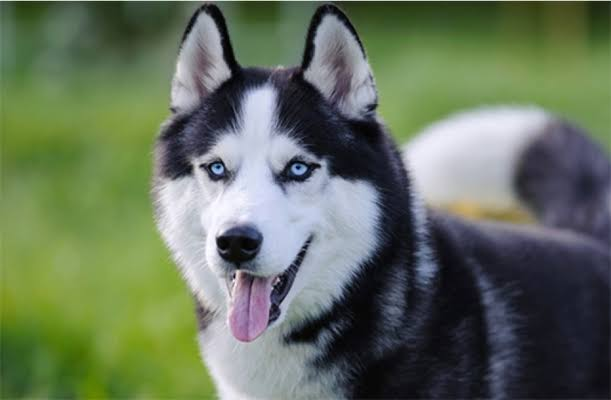
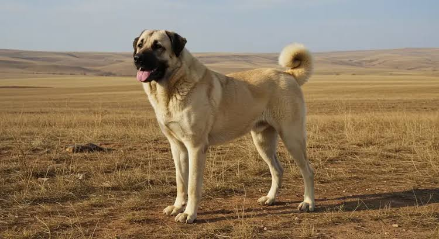
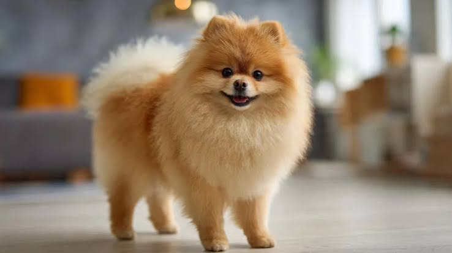
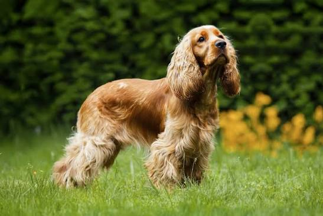

Popüler Köpek Cinsleri
En çok bilinen ve sevilen bazı köpek türleri ve özellikleri:
1. Golden Retriever
Golden Retriever,aile dostu yapısı, yüksek zekası ve sevecen halleriyle tanınır. Çocuklarla son derece iyi anlaşır ve oldukça oyuncudur.
2. Alman Kurdu
Alman Çoban Köpeği olarak da bilinen bu ırk; oldukça sadık,koruyucu ve zekidir. Eğitimi son derece kolaydır ve bekçilik yetenekleri gelişmiştir

3. Pug
Küçük boyutlarıyla,kırışık yüzü ve sevimli halleriyle bilinen Pug cinsleri eve yaşamı için çok uygundur. Mizaç olarak neşeli ve cana yakındır.

4. Sibirya Kurdu (Husky)
Çarpıcı mavi gözleri,kurt benzeri etkileyici görünümü ve enerjik yapısıyla bilinir. Soğuk iklimleri seven, dayanıklı ve oyuncu bir köpektir.

5. Kangal
Ülkemizin gururu olan Kangal, sadakati,koruma iç güdüsü ve iri yapısıyla tanınır. Cesur,akıllı ve ailesine karşı son derece sevecen bir bekçi köpeğidir.

6. Pomeranian
Küçük yapısı, adeta bir pamuk topunu andıran pofuduk tüyleri ve canlı kişiliğiyle bilinen süs köpeği ırkıdır. Oldukça zeki, meraklı ve sadıktır.

7. Maltese Terrier
Bembeyaz ipeksi tüyleri ve siyah düğme gibi parlayan gözleriyle tanınan çok eski bir süs köpeği ırkıdır. Oldukça sevecen, oyuncu ve ev yaşamına mükemmel uyum sağlayan bir dosttur.

8. Border Collie
Dünyanın en zeki köpek ırkı olarak kabul edilir. İnanılmaz yüksek bir enerjiye,iş ahlakına ve öğrenme kapasitesine sahiptir. Çoban köpeği olarak görev yapmasının yanı sıra zeka oyunlarında ve çeviklik yarışmalarında da birincidir.

9. Cocker Spaniel
Uzun, kadifemsi kulakları, duygulu bakışları ve neşeli yapısıyla tanınan popüler bir av ve aile köpeğidir. Oldukça sevecen, oyuncu ve insanlarla vakit geçirmeye bayılan sosyal bir ırktır.

10. Beagle
Dünyanın en popüler küçük iz takip ve aile köpeklerindendir. Çok güçlü bir koku alma yeteneğine, neşeli ve dost canlısı bir karaktere sahiptir. Çocuklarla arası harikadır.